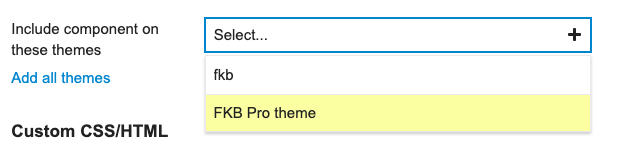
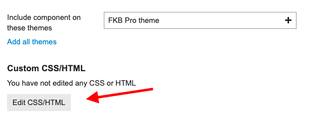
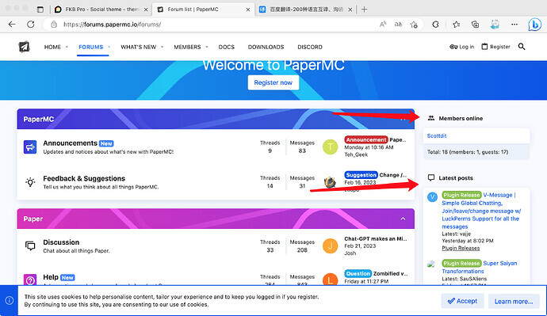
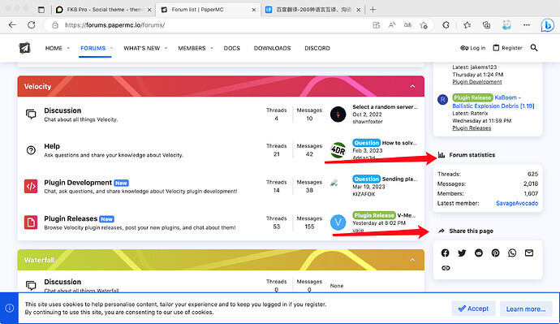

Hello,
Oh, yeah sorry. I’ve merged an update, to don’t hide sidebar if enabled. Note: This theme is not sidebar ready yet. I have to fix, rethink and refactor lots of thing.
Hello,
Oh, yeah sorry. I’ve merged an update, to don’t hide sidebar if enabled. Note: This theme is not sidebar ready yet. I have to fix, rethink and refactor lots of thing.
@Don Thanks for the update
Hello,
I’ve create a bigger update on this theme. I will merge this soon. 
Changes
Desktop view
Mobile view
Revamped user menu (paddingless redesign)
Desktop
Mobile
Docs
Chat
Hello,
I’ve added more updates, fixes etc:
I testing it a little bit more and after I can merge these changes. 
Responsive
Sticky new topic banner
Desktop
Mobile
@Don Thanks for the update
Hello,
I’ve merged this Fixes, improvements, sidebar compatibility etc... by VaperinaDEV · Pull Request #13 · VaperinaDEV/fkb-pro-theme · GitHub update and also updated the OP. 
Is the reactions fix still valid and needed?
Nope, that is not needed anymore. You can remove. 
Hey, awsome theme! 
ive got some minor padding issues when using web browser i would like to solve, but dont really know how.
Not on mobile tho! 
Thanks! I glad you like it  I see this is happens on the experimental
I see this is happens on the experimental new user profile nav. I think this will change a lot in the future, so I will not change the theme for now.
But you can add this to a component.
Desktop / CSS
.new-user-wrapper {
.new-user-content-wrapper {
.user-content {
padding: 1em;
}
}
}
hello @Don, the desktop layout is broken with the last update. Could you please check this at your available time.
Hello, Thanks for the report! I’ve merged a fix 
@Don thank you for the quick fix
Heey man 
I’ve got an issue when updating to latest,
Am still on 3.0.0-beta16 this is probably the reason
But if not, good too know 
Hello  I can’t repro it on the latest version Discourse.
I can’t repro it on the latest version Discourse.
But I can check this on your site if I can register.  Oh I see it’s required an invite code. If you can send me one in PM or create an account then I can check this.
Oh I see it’s required an invite code. If you can send me one in PM or create an account then I can check this.
Seems to work on the default theme.
KenBen settings is at default. Haven’t done anything with it yet.
It works on my test site with latest. Yesterday I updated the templates to fit to the core changes so probably you have to update Discourse to the latest. 
Oh, yes I updated the navigation-bar template too which I think cause this.
hi @Don after the latest updates adsense auto ads not working. Default theme also works when I try. Can you take a look at it in your free time?
Hello, I just checked your site and the ads works fine for me. 
Fixed ads no longer appear in mobile view. It used to work. There is no problem with desktop view.
Works for me on mobile too.  Could you clarify which ads you mean? Some screenshot would be helpful. Thanks
Could you clarify which ads you mean? Some screenshot would be helpful. Thanks 
Can you guide me how to get the data in topic-list card the same way you are doing? - User name - Full male - Creative time - Peréonal action & Slide image ^^
Sorry for replying so many times. currently I am using the theme-component “Alternative Voting Category Style” but when selecting your theme it doesn’t work as expected, hope you can help me with this. and it would be great if you could help activate this theme-component on mobile
Hello,
For this you need to override the template. Here is a guide how you can do it: Developing Discourse Themes & Theme Components
The FKB Pro theme templates you can find here: https://github.com/VaperinaDEV/fkb-pro-theme/tree/main/javascripts/discourse/templates
I have merged an update for adding compatibility with Alternative Voting Category Style theme component. 
Yeah I know, I misspelled the component name 
awesome i just updated the theme and saw your customizations, however the mobile version doesn’t currently support the alternative Voting Category Style component theme, if possible i really hope to add this customization.
Yeah, the Alternative Voting Category Style is only for desktop. To change it you need to fork the theme component and modify some files.
This modification seems too much for my current ability, hope you can give me some suggestions? or I will try to contact the author and ask for their support, although I have replied to the post but still have not received a reply ^^
Hey @hoangphuctran93,
I forked the theme component and modify to work with FKB Pro theme and on mobile too. I reverted the previous theme update.
Here is the theme component 
Awesome, i’m super excited to test this upgraded version of yours ^^ once again thank you very much. Please visit my website https://businesslab.vn. I will have a detailed tutorial in the next few days to share with the community, everything I have learned and supported to implement the project.
I installed it and it’s amazing it worked, I’d like to take a closer look at the code you made
and especially Don’s customization can run on all other themes ^^
Any way to hide the image preview / make it smaller? I love this theme but the image seems to make each topic really tall on my site.
You can use css with Aspect ratio
Example code: https://www.w3schools.com/howto/howto_css_aspect_ratio.asp
You can check my site https://businesslab.vn with ratio 16:10
How I can set this in the Discourse? Like where and which css do I set?
Also, there is this minor issue when setting Google Ads:
I assume the sidebar profile card should be below the ad, not right on top of it.
Thanks!
Hello @codergautam,
I have merged a fix for Discourse Ad plugin - Google Adsense. Please update the theme. 
You can change the image height 
You need to create a new component for this. 
Go to /admin/customize/themes/
Customize → Themes
Click the Components tab and then the Install button
On the popup window click Create new button and type the new component name.
Click Create button.
The component created. Now select FKB Pro theme to activate it.

Click the Edit CSS/HTML button.

Click the Common tab and paste the below code to the CSS section.
If you want to set the image height separately on desktop and mobile, use those tabs instead of Common. Common means this code will be active on desktop and mobile too.
.topic-list {
.main-link {
.link-middle-line {
.topic-image {
height: 280px; // Default 300px
}
}
}
}
If you want to hide the image, use this 
.topic-list {
.main-link {
.link-middle-line {
.topic-image {
display: none;
}
}
}
}
Hope to fix incompatibilities with other theme components
How do you just round the buttons and stuff? I just wanted to do this in my current theme
Hi @danielabc,
There are some theme-component for rounding stuffs. 
Hello @xiaokong23357, can you clarify which theme-component do you mean?
@Don How do I introduce the binding HTML meta tag into an FBK theme?
Hope it will be solved
@Don I mean, I don’t know if the theme can load these things
Hello, sorry for the delay… Yeah I think it’s possible to replace the default right panel with Right Sidebar Blocks. I will check this. 
One more thing ， @Don
My forum uses your theme, now my forum is going to be ready to be added to the Microsoft Bing search engine, but now it needs to do HTML meta tag detection for the forum, how do I do to incorporate this HTML meta tag into the theme
It is very needed now, and I am very grateful for being able to solve it
Create a new theme component in admin like this I introduced above. FKB Pro - Social theme - #88 by dodesz you can change the component name whatever but don’t paste the css I pasted to CSS tab. Copy and Paste the Bing HTML Meta tag into the HEAD tab to the component you created and save it. 
Like this?
Nope, as I see this is a theme. You need to create a component. Which is the other tab or you can convert this to a component with the convert button which is on the bottom of the page. Just follow the instructions I show above. 
Thank you very much, problem solved!
@Don
I’ve merged an update to add: Compatibility with Right Sidebar Blocks theme component by VaperinaDEV · Pull Request #18 · VaperinaDEV/fkb-pro-theme · GitHub
It contains a setting: right sidebar blocks enabled. It will adds some support for the Right Sidebar Blocks theme component and will replaces the default right sidebar (fkb panel) with it.
I have an idea that the sidebar can be made by you in this style and merged into a theme file, and people who need it can turn on the corresponding feature in the theme settings @Don


Hello,
Yes I think this is possible with modify the style if you mean the title is separate from content and it seems this sidebar is not sticky.
Try something like this. 
Create a new theme component like this FKB Pro - Social theme - #88 by dodesz or add it to an existing one.
Desktop / CSS
.full-width .tc-right-sidebar {
position: relative;
top: unset;
padding: 0;
background: none;
box-shadow: none;
overflow-y: unset;
.rs-component {
h3 {
border-bottom: none;
padding-bottom: 0;
}
> div {
background: var(--secondary);
padding: 1em;
border-radius: var(--d-default-border-radius);
box-shadow: 0 1px 2px rgba(0, 0, 0, 0.2);
}
}
}
FYI: both /login and /signup as links gives spinning circle, not opening the modal. iPad on latest everything.
Hey Jakke  I just checked this on your site with and the modals shows up correctly for me on
I just checked this on your site with and the modals shows up correctly for me on /login and /signup.
{kind=link}
{kind=link}
{kind=link}
{kind=link}
{kind=link}
{kind=link}
{kind=link}
{kind=link}
{kind=link}
{kind=link}
{kind=link}
{kind=link}
{kind=link}
{kind=link}
{kind=link}
{kind=link}
{kind=link}
{kind=link}
{kind=link}
{kind=link}
{kind=link}
{kind=link}